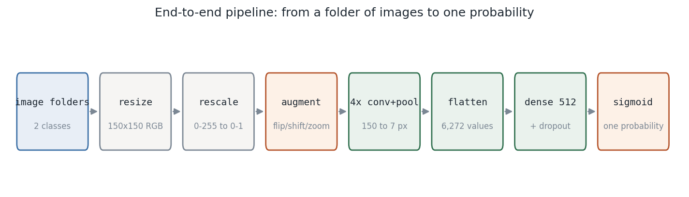
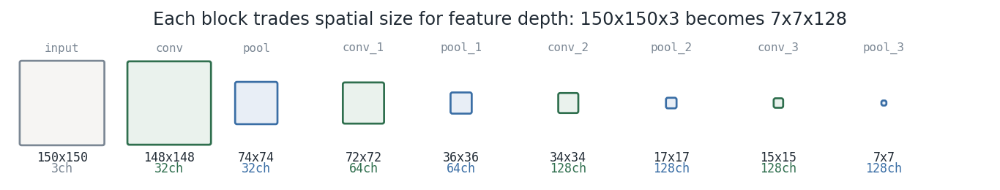
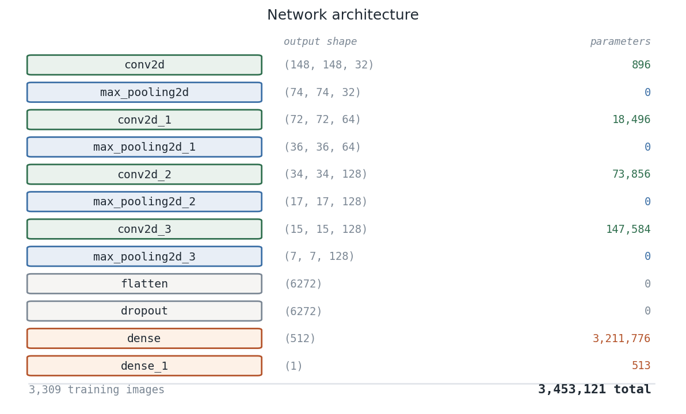
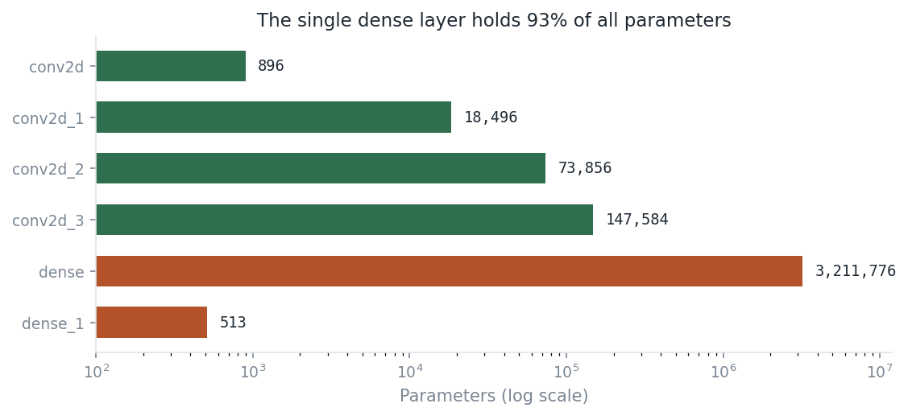
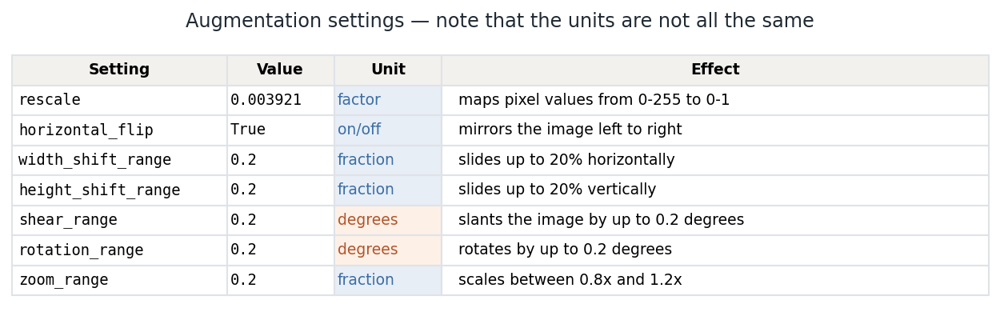
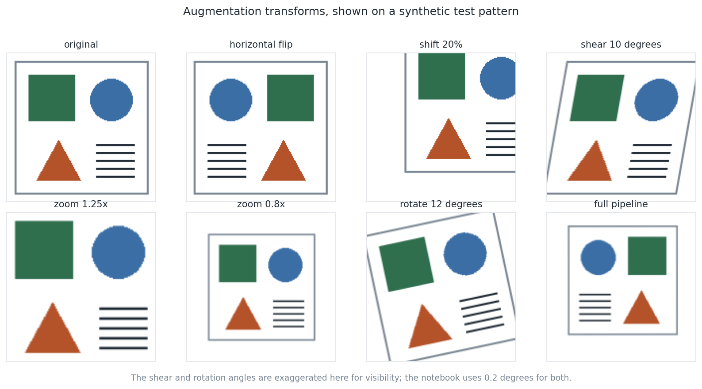
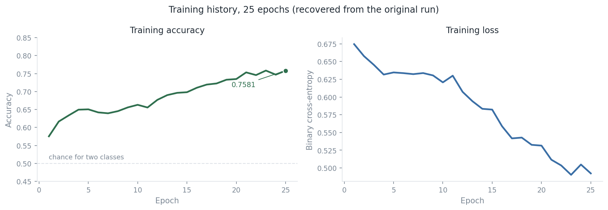

The verdict comes first
The notebook proves that this CNN was trained for 25 epochs and fitted its training iterator increasingly well. It does not prove that it predicts unseen images accurately, identifies gender, or is safe for use with people.
Evidence ledger
| Claim | Evidence retained locally | Status |
|---|---|---|
| A CNN architecture exists | Saved Keras model summary plus pure-Python reconstruction | Verified |
| Training occurred | Full 25-epoch loss and accuracy log in the notebook | Verified |
| Training fit improved | Accuracy 0.5753 → 0.7581; loss 0.6746 → 0.4923 | Verified |
| Unseen-image performance | No validation/test split, labels, or source dataset | Not claimed |
| Identity or gender inference | Appearance and folder labels cannot establish identity | Prohibited use |
From image folder to probability

The image generator is used for both fitting and prediction. That single fact explains why the recovered accuracy is training fit, not a quality measurement on new images.
Architecture: spatial resolution becomes feature depth


Valid convolution:
out = in − kernel + 1. Conv parameters: (kernel² × channels + 1) × filters.The 6,272 → 512 dense layer contains 3,211,776 of 3,453,121 parameters—93% of the model.

Augmentation: realistic variation, not new evidence
Images are rescaled then randomly flipped, shifted, sheared, rotated, and zoomed during training. The source settings are reproduced in a TensorFlow-free module so their values and units can be tested without source images.


Augmentation can reduce sensitivity to small photographic changes. It cannot establish consent, repair biased labels, create missing demographic coverage, or substitute for an untouched test set.
The recovered 25-epoch training record

data/training_log_2022.csv.| Signal | Epoch 1 | Epoch 25 | Interpretation |
|---|---|---|---|
| Accuracy | 0.5753 | 0.7581 | The model increasingly fits the images supplied by its generator. |
| Binary cross-entropy | 0.6746 | 0.4923 | Probability errors decrease on those same training images. |
The loss and accuracy trend does not tell us whether training has overfit. The notebook records no validation loss, validation accuracy, class balance, or held-out confusion matrix.
What failed in the original experiment—and why it matters
| Observed behaviour | Why it breaks a claim | Future guard |
|---|---|---|
| Hard-coded personal Windows path | Other users cannot reproduce data loading. | Project-relative data path and manifest. |
| One generator for train and prediction | Training metrics are not generalisation evidence. | Immutable group-safe train/validation/test split. |
| Class mapping is not saved | Sigmoid probability cannot be interpreted later. | Persist folder-to-index mapping with every run. |
| Rounded sigmoid then argmax over axis 1 | For an (n,1) output, argmax yields zero for every row. | Threshold probabilities directly and compare against a held-out target. |
| Pickled Keras model | Fragile and missing run metadata. | Native Keras export plus model card, hash, and metrics report. |
What a defensible rerun would look like
A same-person, near-duplicate, source, or photo-session leak across splits can produce a deceptively high score. The recovery data contract therefore requires a provenance record, label definition, explicit consent/licence, person/source/session IDs, and a retention/removal policy.
What is verified locally
Run python -m pytest, python scripts/make_figures.py, and python scripts/annotate_notebook.py from the project root. TensorFlow and raw images are not needed for those auditable pieces.
Current conclusion
This is a professionally documented record of a historical CNN, not evidence of a deployable people-classification system. The next legitimate milestone is a consented, documented dataset and a group-safe evaluation design—not a new score or a public prediction demo.
Read the GitHub README · View the preserved legacy README · Read the data contract